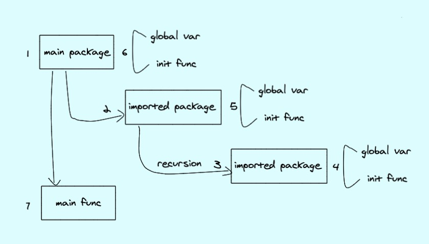
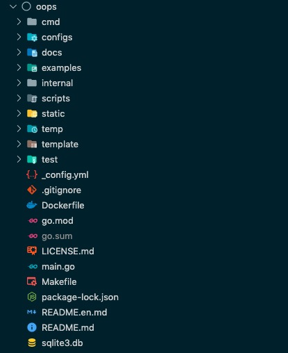

系列目录
1. 介绍
本篇，要先讲下整体的技术框架。
因为我们是基于go-admin这个脚手架来做前后端框架的，所以，先来说明下整个代码架构。
在这之前，我们先简单说明下go程序的代码执行顺序
1.1 Go程序执行顺序

- 执行
go run或者编译后binary文件时，会先加载main package main package一般会import其他package，其他package也会import其依赖的package，这边会有一个递归的初始化操作。package会执行global variables和init()的初始化main package执行本身的global variables和init()的初始化- 执行
main()
2. 目录结构
Oops基于project-layout和go-admin构建了如下图所示的目录结构

3. 源码解析
这边只说明应用相关的源码逻辑。
3.1 系统初始化
main.go
package main
import (
"oops/cmd"
)
func main() {
cmd.Execute()
}
main函数只有一个逻辑，加载cmd包以及执行cmd包中的Execute()函数。
cmd package
package cmd
import (
...
"oops/internal/common/global"
"github.com/spf13/cobra"
"oops/cmd/api"
...
)
var rootCmd = &cobra.Command{
...
}
...
func init() {
...
rootCmd.AddCommand(api.StartCmd)
...
}
//Execute : apply commands
func Execute() {
if err := rootCmd.Execute(); err != nil {
os.Exit(-1)
}
}
这边用到了一个cobra的命令行框架，以及加载api的相关逻辑。
cmd/api
package api
import (
...
"github.com/spf13/cobra"
"oops/internal/app/admin/router"
...
)
var (
configYml string
StartCmd = &cobra.Command{
Use: "server",
Short: "Start API server",
Example: "go-admin server -c config/settings.yml",
SilenceUsage: true,
PreRun: func(cmd *cobra.Command, args []string) {
setup()
},
RunE: func(cmd *cobra.Command, args []string) error {
return run()
},
}
)
var AppRouters = make([]func(), 0)
func init() {
...
//注册路由 fixme 其他应用的路由，在本目录新建文件放在init方法
AppRouters = append(AppRouters, router.InitRouter)
}
func setup() {
//1. 读取配置
...
//2. 设置日志
...
//3. 初始化数据库链接
...
}
func run() error {
//运行http服务
...
return nil
}
这里进行了注册路由的操作，并读取配置，对日志、数据库以及http server进行初始化。
internal/app/admin/router
package router
import (
...
"github.com/gin-gonic/gin"
log "github.com/go-admin-team/go-admin-core/logger"
"oops/internal/app/admin/middleware"
"oops/internal/app/admin/middleware/handler"
common "oops/internal/common/middleware"
...
)
// InitRouter 路由初始化，不要怀疑，这里用到了
func InitRouter() {
...
middleware.InitMiddleware(r)
// the jwt middleware
authMiddleware, err := middleware.AuthInit()
if err != nil {
log.Fatalf("JWT Init Error, %s", err.Error())
}
// 注册系统路由
InitSysRouter(r, authMiddleware)
// 注册业务路由
// TODO: 这里可存放业务路由，里边并无实际路由只有演示代码
InitExamplesRouter(r, authMiddleware)
}
var (
routerNoCheckRole = make([]func(*gin.RouterGroup), 0)
routerCheckRole = make([]func(v1 *gin.RouterGroup, authMiddleware *jwt.GinJWTMiddleware), 0)
)
// 路由示例
func InitExamplesRouter(r *gin.Engine, authMiddleware *jwt.GinJWTMiddleware) *gin.Engine {
// 无需认证的路由
examplesNoCheckRoleRouter(r)
// 需要认证的路由
examplesCheckRoleRouter(r, authMiddleware)
return r
}
// 无需认证的路由示例
func examplesNoCheckRoleRouter(r *gin.Engine) {
// 可根据业务需求来设置接口版本
v1 := r.Group("/api/v1")
// 空接口防止v1定义无使用报错
v1.GET("/nilcheckrole", nil)
for _, f := range routerNoCheckRole {
f(v1)
}
// {{无需认证路由自动补充在此处请勿删除}}
//registerSysFileInfoRouter(v1)
}
// 需要认证的路由示例
func examplesCheckRoleRouter(r *gin.Engine, authMiddleware *jwtauth.GinJWTMiddleware) {
// 可根据业务需求来设置接口版本
v1 := r.Group("/api/v1")
// 空接口防止v1定义无使用报错
v1.GET("/checkrole", nil)
for _, f := range routerCheckRole {
f(v1, authMiddleware)
}
}
这里面实现了具体的路由注册接口逻辑，后续新增的业务路由注册只需要往routerCheckRole和routerNoCheckRole变量中插入数据即可。
一个例子：
func init() {
routerCheckRole = append(routerCheckRole, registerApplicationRouter)
}
// 需认证的路由代码
func registerApplicationRouter(v1 *gin.RouterGroup, authMiddleware *jwt.GinJWTMiddleware) {
api := &cmdb.Application{}
r := v1.Group("/cmdb/application").Use(authMiddleware.MiddlewareFunc()).Use(middleware2.AuthCheckRole()).Use(actions.PermissionAction())
{
r.GET("", api.GetApplicationList)
r.GET("/:id", api.GetApplication)
r.POST("", api.InsertApplication)
r.PUT("", api.UpdateApplication)
r.DELETE("", api.DeleteApplication)
}
}
该例子将应用相关的路由信息添加到了routerCheckRole里面。
3.2 定义一个业务
internal/app
目录结构说明
.
├── admin
│ ├── apis
│ │ ├── cmdb
│ │ │ └── application.go
│ ├── middleware
│ ├── models
│ │ ├── cmdb
│ │ │ └── application.go
│ ├── router
│ │ ├── cmdb.go
│ │ ├── router.go
│ └── service
│ ├── cmdb
│ │ ├── application.go
│ │ ├── dto
│ │ │ ├── application.go
admin：可以理解成一个project
apis.cmdb：是project的api文件
middleware：是project的中间件
models.cmdb：是project的数据库层的模型
router：是project的路由
service.cmdb：是project的业务逻辑处理
service.cmdb.dto：是project的api对应的数据接收以及解析模型
现在，我们按照 models、service.dto、service、apis、router这个顺序来说明；
models
package cmdb
import (
"oops/internal/app/admin/models/system"
"oops/internal/common/models"
)
type Application struct {
models.ControlBy
models.ModelTime
AppId int `gorm:"primaryKey;autoIncrement;comment:应用ID" json:"appId"`
AppName string `json:"appName" gorm:"type:varchar(64);comment:应用名称"`
Language string `json:"language" gorm:"type:varchar(128);comment:语言"`
Repo string `json:"repo" gorm:"type:varchar(128);comment:代码仓库"`
DeptId int `json:"deptId" gorm:"type:bigint(20);comment:部门"`
UserId int `json:"userId" gorm:"type:bigint(20);comment:用户"`
Remark string `json:"remark" gorm:"type:varchar(255);comment:备注"`
Status string `json:"status" gorm:"type:varchar(4);comment:状态"`
Dept *system.SysDept `json:"dept"`
User *system.SysUser `json:"user"`
}
func (Application) TableName() string {
return "application"
}
func (e *Application) Generate() models.ActiveRecord {
o := *e
return &o
}
func (e *Application) GetId() interface{} {
return e.AppId
}
首先，是一个结构体Application里边含有正常的数据库表字段，但是其中又包含了三个结构体：
1、models.Model 表id 默认主键是固定的ID和自增长的int类型
2、models.ControlBy 表创建人和修改人 数据库表默认必有字段
3、models.ModelTime 表创建时间和修改时间、删除时间的字段默认必有字段
dto
package dto
import (
"oops/internal/common/apis"
"github.com/gin-gonic/gin"
"oops/internal/app/admin/models/cmdb"
"oops/internal/common/dto"
common "oops/internal/common/models"
)
// ApplicationSearch 搜索列表对应的数据接收模型 主要针对分页、列表；
type ApplicationSearch struct {
dto.Pagination `search:"-"`
AppId int `form:"AppId" search:"type:exact;column:app_id;table:application" comment:"应用ID"`
AppName string `form:"appName" search:"type:contains;column:app_name;table:application" comment:"应用名称"`
Language string `form:"language" search:"type:contains;column:language;table:application" comment:"语言"`
Repo string `form:"repo" search:"type:contains;column:repo;table:application" comment:"仓库地址"`
DeptId string `form:"deptId" search:"type:exact;column:dept_id;table:application" comment:"部门"`
UserId string `form:"userId" search:"type:exact;column:user_id;table:application" comment:"用户"`
Status string `form:"status" search:"type:exact;column:status;table:application" comment:"状态"`
}
// GetNeedSearch 将search 转化为interface
func (m *ApplicationSearch) GetNeedSearch() interface{} {
return *m
}
// Bind 从上下文中解析数据
func (m *ApplicationSearch) Bind(ctx *gin.Context) error {
log := apis.GetRequestLogger(ctx)
err := ctx.ShouldBind(m)
if err != nil {
log.Debugf("ShouldBind error: %s", err.Error())
}
return err
}
// Generate 将数据转化成数据库使用的结构体
func (m *ApplicationSearch) Generate() dto.Index {
o := *m
return &o
}
// ApplicationControl 创建、修改使用的数据接收模型
type ApplicationControl struct {
AppId int `json:"appId" comment:应用ID"`
AppName string `json:"appName" comment:应用名称"`
Language string `json:"language" comment:语言"`
Repo string `json:"repo" comment:代码仓库"`
DeptId int `json:"deptId" comment:部门"`
UserId int `json:"userId" comment:用户"`
Remark string `json:"remark" comment:备注"`
Status string `json:"status" comment:状态"`
}
// Bind 从上下文中解析数据
func (a *ApplicationControl) Bind(ctx *gin.Context) error {
log := apis.GetRequestLogger(ctx)
//err := ctx.ShouldBindUri(s)
//if err != nil {
// log.Debugf("ShouldBindUri error: %s", err.Error())
// return err
//}
err := ctx.ShouldBind(a)
if err != nil {
log.Debugf("ShouldBind error: %s", err.Error())
}
return err
}
// Generate 将数据转化成数据库使用的结构体
func (a *ApplicationControl) Generate() dto.Control {
cp := *a
return &cp
}
func (a *ApplicationControl) GenerateM() (common.ActiveRecord, error) {
return &cmdb.Application{
AppId: a.AppId,
AppName: a.AppName,
Language: a.Language,
Repo: a.Repo,
DeptId: a.DeptId,
UserId: a.UserId,
Remark: a.Remark,
Status: a.Status,
}, nil
}
// GetId 获取id
func (s *ApplicationControl) GetId() interface{} {
return s.AppId
}
// ApplicationById 通过id查询、删除等使用的模型
type ApplicationById struct {
dto.ObjectById
}
func (s *ApplicationById) Generate() dto.Control {
cp := *s
return &cp
}
func (s *ApplicationById) GenerateM() (common.ActiveRecord, error) {
return &cmdb.Application{}, nil
}
service
package cmdb
import (
"errors"
"gorm.io/gorm"
"oops/internal/app/admin/models/cmdb"
"oops/internal/common/actions"
cDto "oops/internal/common/dto"
common "oops/internal/common/models"
"oops/internal/common/service"
)
type Application struct {
service.Service
}
// GetApplicationPage 获取Application列表
func (e *Application) GetApplicationPage(c cDto.Index, p *actions.DataPermission, list *[]cmdb.Application, count *int64) error {
var err error
var data cmdb.Application
err = e.Orm.Model(&data).
Scopes(
cDto.MakeCondition(c.GetNeedSearch()),
cDto.Paginate(c.GetPageSize(), c.GetPageIndex()),
actions.Permission(data.TableName(), p),
).
//Preload("Dept").
Find(list).Limit(-1).Offset(-1).
Count(count).Error
if err != nil {
e.Log.Errorf("db error: %s", err)
return err
}
return nil
}
// GetApplication 获取Application对象
func (e *Application) GetApplication(d cDto.Control, p *actions.DataPermission, model *cmdb.Application) error {
var err error
var data cmdb.Application
db := e.Orm.Model(&data).
Scopes(
actions.Permission(data.TableName(), p),
).
First(model, d.GetId())
err = db.Error
if err != nil && errors.Is(err, gorm.ErrRecordNotFound) {
err = errors.New("查看对象不存在或无权查看")
e.Log.Errorf("db error: %s", err)
return err
}
if db.Error != nil {
e.Log.Errorf("db error: %s", err)
return err
}
return nil
}
// InsertApplication 创建Application对象
func (e *Application) InsertApplication(model common.ActiveRecord) error {
var err error
var data cmdb.Application
err = e.Orm.Model(&data).
Create(model).Error
if err != nil {
e.Log.Errorf("db error: %s", err)
return err
}
return nil
}
// UpdateApplication 修改Application对象
func (e *Application) UpdateApplication(c common.ActiveRecord, p *actions.DataPermission) error {
var err error
db := e.Orm.Model(c).
Scopes(
actions.Permission(c.TableName(), p),
).Where(c.GetId()).Updates(c)
if db.Error != nil {
e.Log.Errorf("db error: %s", err)
return err
}
if db.RowsAffected == 0 {
return errors.New("无权更新该数据")
}
return nil
}
// RemoveApplication 删除Application
func (e *Application) RemoveApplication(d cDto.Control, c common.ActiveRecord, p *actions.DataPermission) error {
var err error
var data cmdb.Application
db := e.Orm.Model(&data).
Scopes(
actions.Permission(data.TableName(), p),
).Where(d.GetId()).Delete(c)
if db.Error != nil {
err = db.Error
e.Log.Errorf("Delete error: %s", err)
return err
}
if db.RowsAffected == 0 {
err = errors.New("无权删除该数据")
return err
}
return nil
}
service中包含了对数据的一个数据操作
apis
package cmdb
import (
"net/http"
"github.com/gin-gonic/gin"
"github.com/go-admin-team/go-admin-core/sdk/pkg/jwtauth/user"
"oops/internal/app/admin/models/cmdb"
service "oops/internal/app/admin/service/cmdb"
"oops/internal/app/admin/service/cmdb/dto"
"oops/internal/common/actions"
"oops/internal/common/apis"
common "oops/internal/common/models"
)
type Application struct {
apis.Api
}
// @Summary 列表应用信息数据
// @Description 获取JSON
// @Tags 应用
// @Param appName query string false "appName"
// @Success 200 {string} string "{"code": 200, "data": [...]}"
// @Success 200 {string} string "{"code": -1, "message": "抱歉未找到相关信息"}"
// @Router /api/v1/cmdb/application [get]
// @Security Bearer
func (e *Application) GetApplicationList(c *gin.Context) {
log := e.GetLogger(c)
d := new(dto.ApplicationSearch)
db, err := e.GetOrm(c)
if err != nil {
log.Error(err)
return
}
req := d.Generate()
//查询列表
err = req.Bind(c)
if err != nil {
log.Warnf("Bind error: %s", err.Error())
e.Error(c, http.StatusUnprocessableEntity, err, "参数验证失败")
return
}
//数据权限检查
p := actions.GetPermissionFromContext(c)
list := make([]cmdb.Application, 0)
var count int64
serviceStudent := service.Application{}
serviceStudent.Log = log
serviceStudent.Orm = db
err = serviceStudent.GetApplicationPage(req, p, &list, &count)
if err != nil {
e.Error(c, http.StatusInternalServerError, err, "查询失败")
return
}
e.PageOK(c, list, int(count), req.GetPageIndex(), req.GetPageSize(), "查询成功")
}
// @Summary 获取应用
// @Description 获取JSON
// @Tags 应用
// @Param appId path int true "应用编码"
// @Success 200 {object} app.Response "{"code": 200, "data": [...]}"
// @Router /api/v1/cmdb/application/{appId} [get]
// @Security Bearer
func (e *Application) GetApplication(c *gin.Context) {
log := e.GetLogger(c)
control := new(dto.ApplicationById)
db, err := e.GetOrm(c)
if err != nil {
log.Error(err)
return
}
//查看详情
req := control.Generate()
err = req.Bind(c)
if err != nil {
e.Error(c, http.StatusUnprocessableEntity, err, "参数验证失败")
return
}
var object cmdb.Application
//数据权限检查
p := actions.GetPermissionFromContext(c)
serviceApplication := service.Application{}
serviceApplication.Log = log
serviceApplication.Orm = db
err = serviceApplication.GetApplication(req, p, &object)
if err != nil {
e.Error(c, http.StatusUnprocessableEntity, err, "查询失败")
return
}
e.OK(c, object, "查看成功")
}
// @Summary 创建应用
// @Description 获取JSON
// @Tags 应用
// @Accept application/json
// @Product application/json
// @Param data body models.SysUser true "应用数据"
// @Success 200 {string} string "{"code": 200, "message": "添加成功"}"
// @Success 200 {string} string "{"code": -1, "message": "添加失败"}"
// @Router /api/v1/cmdb/application [post]
func (e *Application) InsertApplication(c *gin.Context) {
log := e.GetLogger(c)
control := new(dto.ApplicationControl)
db, err := e.GetOrm(c)
if err != nil {
log.Error(err)
return
}
//新增操作
req := control.Generate()
err = req.Bind(c)
if err != nil {
e.Error(c, http.StatusUnprocessableEntity, err, "参数验证失败")
return
}
var object common.ActiveRecord
object, err = req.GenerateM()
if err != nil {
e.Error(c, http.StatusInternalServerError, err, "模型生成失败")
return
}
// 设置创建人
object.SetCreateBy(user.GetUserId(c))
serviceApplication := service.Application{}
serviceApplication.Orm = db
serviceApplication.Log = log
err = serviceApplication.InsertApplication(object)
if err != nil {
log.Error(err)
e.Error(c, http.StatusInternalServerError, err, "创建失败")
return
}
e.OK(c, object.GetId(), "创建成功")
}
// @Summary 修改应用数据
// @Description 获取JSON
// @Tags 应用
// @Accept application/json
// @Product application/json
// @Param data body models.SysUser true "body"
// @Success 200 {string} string "{"code": 200, "message": "修改成功"}"
// @Success 200 {string} string "{"code": -1, "message": "修改失败"}"
// @Router /api/v1/cmdb/application/{appId} [put]
func (e *Application) UpdateApplication(c *gin.Context) {
control := new(dto.ApplicationControl)
log := e.GetLogger(c)
db, err := e.GetOrm(c)
if err != nil {
log.Error(err)
return
}
req := control.Generate()
//更新操作
err = req.Bind(c)
if err != nil {
e.Error(c, http.StatusUnprocessableEntity, err, "参数验证失败")
return
}
var object common.ActiveRecord
object, err = req.GenerateM()
if err != nil {
e.Error(c, http.StatusInternalServerError, err, "模型生成失败")
return
}
object.SetUpdateBy(user.GetUserId(c))
//数据权限检查
p := actions.GetPermissionFromContext(c)
serviceApplication := service.Application{}
serviceApplication.Orm = db
serviceApplication.Log = log
err = serviceApplication.UpdateApplication(object, p)
if err != nil {
log.Error(err)
return
}
e.OK(c, object.GetId(), "更新成功")
}
// @Summary 删除应用数据
// @Description 删除数据
// @Tags 应用
// @Param appId path int true "appId"
// @Success 200 {string} string "{"code": 200, "message": "删除成功"}"
// @Success 200 {string} string "{"code": -1, "message": "删除失败"}"
// @Router /api/v1/cmdb/application/{appId} [delete]
func (e *Application) DeleteApplication(c *gin.Context) {
log := e.GetLogger(c)
control := new(dto.ApplicationById)
db, err := e.GetOrm(c)
if err != nil {
log.Error(err)
return
}
//删除操作
req := control.Generate()
err = req.Bind(c)
if err != nil {
log.Errorf("Bind error: %s", err)
e.Error(c, http.StatusUnprocessableEntity, err, "参数验证失败")
return
}
var object common.ActiveRecord
object, err = req.GenerateM()
if err != nil {
e.Error(c, http.StatusInternalServerError, err, "模型生成失败")
return
}
// 设置编辑人
object.SetUpdateBy(user.GetUserId(c))
// 数据权限检查
p := actions.GetPermissionFromContext(c)
serviceApplication := service.Application{}
serviceApplication.Orm = db
serviceApplication.Log = log
err = serviceApplication.RemoveApplication(req, object, p)
if err != nil {
log.Error(err)
return
}
e.OK(c, object.GetId(), "删除成功")
}
routes
package router
import (
"oops/internal/app/admin/apis/cmdb"
"oops/internal/common/actions"
middleware2 "oops/internal/common/middleware"
"github.com/gin-gonic/gin"
jwt "github.com/go-admin-team/go-admin-core/sdk/pkg/jwtauth"
)
func init() {
routerCheckRole = append(routerCheckRole, registerApplicationRouter)
}
// 需认证的路由代码
func registerApplicationRouter(v1 *gin.RouterGroup, authMiddleware *jwt.GinJWTMiddleware) {
api := &cmdb.Application{}
r := v1.Group("/cmdb/application").Use(authMiddleware.MiddlewareFunc()).Use(middleware2.AuthCheckRole()).Use(actions.PermissionAction())
{
r.GET("", api.GetApplicationList)
r.GET("/:id", api.GetApplication)
r.POST("", api.InsertApplication)
r.PUT("", api.UpdateApplication)
r.DELETE("", api.DeleteApplication)
}
}
创建一个空的go文件，设置init初始化接口方法，根据业务定义好路由注册函数名称，并且正确配置正确的权限控制中间件，一套业务就结束了;
4. 总结
本章说明了oops项目的后端代码结构，以及实现一个业务的逻辑操作。整个项目会用到的主流框架如下：
- go-admin
- cobra
- gorm
- gin
- casbin
- swagger
- viper(后续考虑加入)